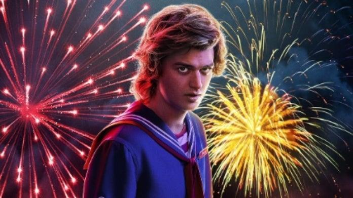

Eleven is a young girl with psychokinetic abilities who escapes from a secretive government laboratory. Eleven is taken in by a group of kids and becomes a key member of their group. Throughout the series, Eleven struggles with her past, including her upbringing in the lab, and her quest to discover her true identity and the extent of her powers. She forms close bonds with the group of friends, especially with Mike Wheeler, and uses her telekinetic abilities to help them battle supernatural threats, including the mysterious Demogorgon and the sinister Upside Down. Eleven's character is known for her strength, resilience, and determination, and her story is a central focus of the show's narrative.

Steve is introduced as a high school student who initially comes across as a typical popular and somewhat arrogant teenager. He is dating Nancy Wheeler at the beginning of the series and is portrayed as a character who cares a lot about his social status. As the series progresses, Steve's character undergoes significant development. He starts as a self-absorbed character but gradually matures and becomes more responsible. He befriends Dustin Henderson, one of the young boys in the show, and becomes a fatherly figure and protector to the group of kids who are battling supernatural threats from the Upside Down. Steve's character becomes a fan-favorite due to his growth, his humorous one-liners, and his willingness to fight alongside the kids against the various creatures and mysteries of the show. He transforms from a stereotypical high school "bad boy" into a beloved character who shows genuine care for his friends and is willing to take risks to protect them.